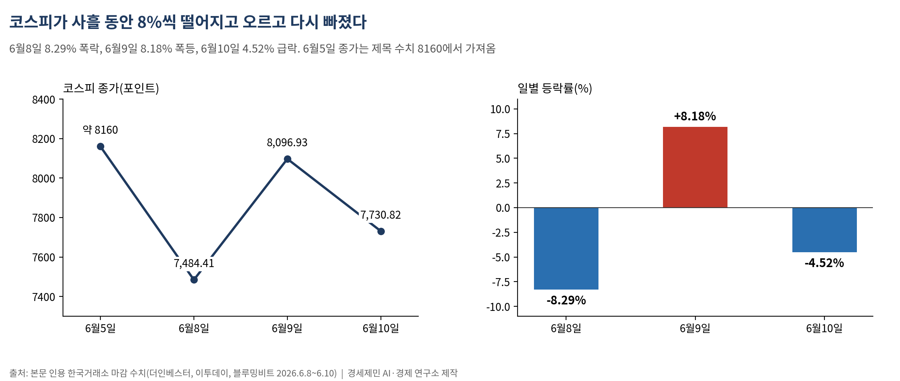
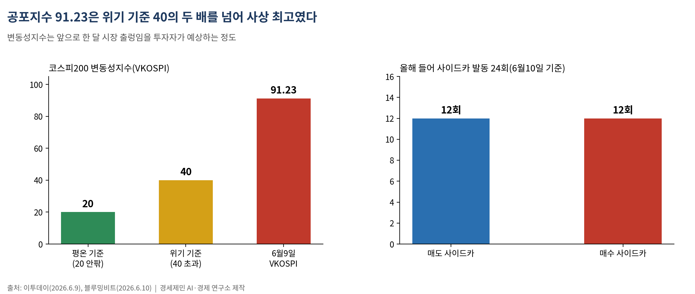
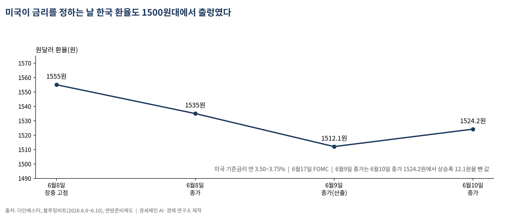
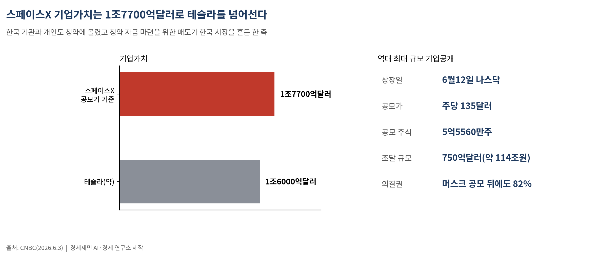
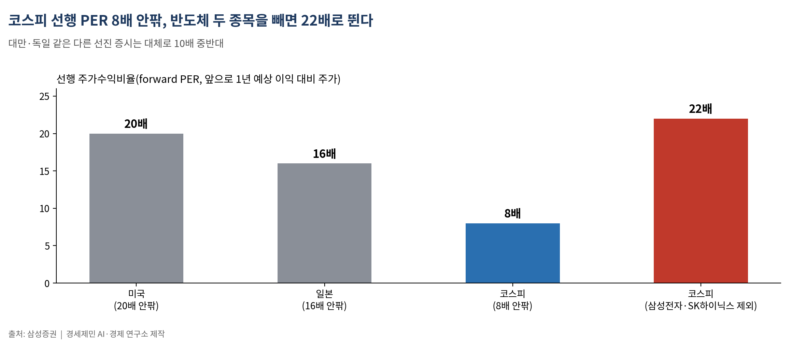

[주식공부] 코스피가 사흘 만에 8%씩 오르내린 까닭, 답은 다음 주 미국에 있다
AI경세제민=김갑봉 기자 | 8160→7484→8096→7730 롤러코스터, 공포지수 91.23 사상 최고… 6월17일 FOMC와 6월12일 스페이스X 상장이 방향을 가른다
코스피가 사흘 동안 8%씩 떨어지고 오르고 다시 빠졌다. 6월8일 8.29% 폭락, 6월9일 8.18% 폭등, 6월10일 4.52% 급락이다. 같은 지수가 하루 만에 표정을 세 번 바꿨다.
이 변동성을 만든 힘은 한국 안이 아니라 한국 밖에 있다. 다음 주 두 사건이 방향을 정한다. 6월12일 미국 나스닥에 상장하는 스페이스X, 그리고 6월17일 끝나는 미국 연방공개시장위원회(FOMC) 회의다. 초보 투자자가 사흘간의 롤러코스터보다 이 두 날짜를 먼저 봐야 하는 이유를 숫자로 푼다.
"8% 폭락, 8% 폭등, 다시 4.5% 급락" — 사흘간 무슨 일이 있었나

시작은 미국이었다. 6월 첫째 주 미국 나스닥지수가 4.18% 빠진 25709.43에 마감해 2025년 4월 이후 최악의 하루를 기록했다(CNBC). 방아쇠는 브로드컴이었다. 인공지능 반도체 분기 매출 전망을 160억달러(약 24조원)로 내놓아 시장 예상 172억달러를 밑돌았고, 연간 전망도 올리지 않자 주가가 하루 14% 빠졌다(TheStreet). 좋은 실적에도 기대에 못 미치면 파는 '재료 소멸 매도'다. 반도체 상장지수펀드 SOXX는 10% 내렸고, 마이크론은 17%, AMD는 12.6% 빠졌다.
그 충격이 6월8일 한국으로 건너왔다. 코스피는 8.29% 내린 7484.41에 마감했다. 장 시작 직후 서킷브레이커가 걸렸고, 코스닥은 9.08% 빠진 911.39로 1000선을 내줬다(더인베스터). 삼성전자가 10.18% 빠진 29만5500원, SK하이닉스가 7.68% 내린 191만1000원이었다. 이날 개인은 1조7617억원어치를 순매수했지만, 기관이 1조6200억원, 외국인이 3543억원을 팔았다.
이튿날 코스피는 8.18% 올라 8096.93에 마감했다. 612.52포인트 상승으로 하루 상승폭 역대 최대였다(이투데이). 그리고 6월10일 다시 4.52% 빠진 7730.82에 마감해 8000선을 하루 만에 반납했다. 장중엔 6.8%까지 밀려 7540선을 찍었고, 오후 1시16분 사이드카가 걸렸다. 올해 들어 24번째 사이드카(매도 12회·매수 12회)였다(블루밍비트). 8160에서 7484로, 다시 8096으로, 또 7730으로. 네 개의 숫자는 나흘 사이 같은 지수가 찍은 값이다.
서킷브레이커와 사이드카, 시장이 누른 비상정지 버튼

사흘간 두 장치가 여러 번 작동했다. 둘 다 너무 빠른 매매를 강제로 멈추는 안전장치다.
서킷브레이커(circuit breaker, 회로 차단기)는 지수가 일정 폭 이상 급락하면 주식 거래 전체를 20분간 멈추는 제도다. 사람이 흥분하면 잠시 떼어 놓듯, 시장이 공포로 한쪽으로만 쏠릴 때 강제로 숨을 고르게 한다. 사이드카(sidecar)는 그보다 한 단계 약한 장치로, 선물 가격이 급변하면 프로그램 매매를 5분간 묶는다. 컴퓨터가 자동으로 쏟아내는 주문이 현물 시장을 더 흔들지 못하게 막는 장치다.
이 장치가 켜졌다는 것은 시장이 정상 속도를 넘어 움직였다는 신호다. 6월9일 코스피200 변동성지수(VKOSPI)는 91.23으로 사상 최고를 찍었다(이투데이). 변동성지수는 투자자가 앞으로 한 달 시장이 얼마나 출렁일지 예상하는 정도를 숫자로 나타낸 '공포지수'다. 보통 20 안팎이면 평온, 40을 넘으면 위기 국면으로 본다. 91이라는 숫자는 시장이 방향을 못 잡고 떨고 있었다는 뜻이다.
흔들림은 모두에게 같은 값을 매기지 않는다. 급락 이틀(6월5일·8일) 새 5대 은행 마이너스통장 잔액이 6000억원 늘었다(서울경제·중앙이코노미뉴스). 변동성을 기회로 본 빚이다. 사이드카가 묶는 프로그램 매매는 기관이 굴리고, 마이너스통장을 여는 손은 대개 개인이다.
"미국이 정하는 한국 금리" — 6월17일 FOMC와 새 의장 워시

다음 주 가장 큰 사건은 6월16~17일 FOMC다. FOMC는 미국 중앙은행인 연방준비제도가 기준금리를 정하는 회의다. 미국 기준금리, 곧 연방기금금리(federal funds rate)는 은행끼리 하루짜리 돈을 빌릴 때 적용하는 금리로, 전 세계 돈값의 기준이 된다. 현재 미국 기준금리는 연 3.50~3.75%다(연준).
이번 회의는 5월15일 취임한 새 의장 케빈 워시가 처음 주재한다. 시장은 금리 동결을 65% 확률로 본다(폴리마켓). 다만 초보가 볼 대목은 금리 자체가 아니라 문장 하나다. 연준은 그동안 성명서에 '완화 편향(easing bias)', 곧 앞으로 금리를 내릴 쪽으로 기울어 있다는 뜻의 표현을 담아 왔다. 이 문장이 빠지면 '올해 금리 인하는 없다'는 신호로 읽힌다. 골드만삭스는 이미 2026년 인하 없음으로 전망을 바꿨다(연준 의사록·로이터).
미국 금리가 한국을 흔드는 통로는 환율이다. 미국 금리가 높게 유지되면 달러가 강해지고 원화가 약해진다. 원달러 환율은 6월8일 장중 1555원까지 올랐다가 1535원에 마감했고, 6월10일엔 12.1원 오른 1524.2원에 마감했다(더인베스터·블루밍비트). 환율이 오르면 외국인은 한국 주식을 팔아 달러로 바꿔 나갈 유인이 커진다. 미국이 금리를 정하는 날, 한국 투자자의 계좌가 함께 출렁이는 이유다.
또 하나의 변수는 유가다. 브렌트유는 배럴당 93달러(약 14만원)선이다(트레이딩이코노믹스). 미국과 이란의 휴전이 불안정하게 이어지고 호르무즈 해협 봉쇄가 풀리지 않아, 6월10일 코스피 급락에도 중동 우려가 겹쳤다. 유가가 오르면 물가가 오르고, 물가가 오르면 금리를 못 내린다. 유가와 금리와 환율은 따로 노는 숫자가 아니라 한 줄로 이어진 숫자다.
750억달러를 빨아들이는 스페이스X, 외국인이 한국을 파는 한 이유

6월12일 일론 머스크의 스페이스X가 나스닥에 상장한다(티커 SPCX). 공모가는 주당 135달러(약 20만원), 기업가치는 1조7700억달러(약 2700조원)로 매겨졌다. 테슬라(약 1조6000억달러)를 넘어 미국 시가총액 7위에 해당한다. 5억5560만주를 팔아 750억달러(약 114조원)를 조달하는, 역대 최대 규모 기업공개다(CNBC). 알리바바의 세 배가 넘는다.
이 한 건이 한국 증시를 흔든 한 축이다. 한국 기관과 개인 투자자도 이 청약에 몰렸고(더인베스터), 청약 자금을 마련하려면 들고 있던 주식을 팔아야 한다. 돈이 한국 시장에서 빠져 미국 상장으로 흘러가는 길이다. 외국인 글로벌 펀드도 한국 반도체 비중이 목표를 넘자 초과분을 덜어 미국 IPO로 옮겼다. '외국인이 한국을 버린다'는 헤드라인 뒤에는 2700조원짜리 상장을 향해 움직이는 돈의 방향이 있다.
상장 주체가 누구이고 그 과실이 어디로 가는지도 함께 본다. 머스크는 공모 뒤에도 의결권 82%를 쥔다. 천문학적 자금이 모이는 회사의 통제권은 한 사람에게 남는 구조다.
초보가 챙길 숫자 — 선행 PER, 공포지수, 적정 지수 수준

마지막으로 초보가 외워 둘 잣대 하나. 주가가 싼지 비싼지 가늠하는 대표 지표가 선행 주가수익비율(forward PER)이다. 앞으로 1년 예상 이익 대비 주가가 몇 배인지 보는 숫자로, 낮을수록 이익에 견줘 주가가 싸다는 뜻이다.
나라별로 보면 미국은 20배 안팎, 일본은 16배 안팎에서 거래된다(삼성증권). 대만·독일 같은 다른 선진 증시도 대체로 10배 중반대에 머문다. 코스피는 8배 안팎으로 그 절반 수준이다. 다만 한 가지 함정이 있다. 코스피가 싼 것은 삼성전자·SK하이닉스 같은 반도체 덕인데, 이 둘을 빼면 코스피 선행 PER은 22배로 뛴다. 같은 지수라도 무엇을 들고 있느냐가 결과를 가른다.
사흘간의 롤러코스터에서 기관과 외국인은 FOMC 일정과 스페이스X 청약 흐름을 먼저 읽었고, 개인은 그 흐름을 8% 폭락과 8% 폭등이라는 헤드라인으로 뒤늦게 만났다. 다음 주 달력에 적힌 6월12일과 6월17일을 미리 펴 보는 일과, 다음 주 시세판을 헤드라인으로 마주하는 일은 다른 자리에서 시작한다.
─────────────────────
활용 AI: Claude Opus 4.8 (Anthropic)
참고문헌
더인베스터(The Investor), 'Kospi sinks 8% amid semiconductor selloff', 임은별 기자, 2026.6.8, https://www.theinvestor.co.kr/article/10766537
블루밍비트(bloomingbit), 'Kospi Closes Down 4.52%, Gives Up 8,000 Level After One Day', Joon Hyoung Lee, 2026.6.10, https://en.bloomingbit.io/feed/news/113930
이투데이, '8160→7484→8096 롤러코스피, 코스피 역대 최대 상승인데 공포지수도 사상 최고', 2026.6.9, https://www.etoday.co.kr/news/view/2591955
데일리비즈온, '코스피 8.18% 급등 8096.93 마감, 하루 만에 8000선 회복', 2026.6.9, https://www.dailybizon.com/news/articleView.html?idxno=67763
KED Global, 'Foreign sell-off sparks Kospi Black Friday; funds exit ahead of SpaceX IPO', 2026.6.5, https://www.kedglobal.com/korean-stock-market/newsView/ked202606050013
CNBC, 'Nasdaq falls 4% and suffers worst day since April 2025 as traders flee chip stocks', 2026.6.4, https://www.cnbc.com/2026/06/04/stock-market-today-live-updates.html
TheStreet, 'Stock Market Today (June 5, 2026): Nasdaq falls 4% as semiconductor slide wipes $1T from markets', 2026.6.5, https://www.thestreet.com/stock-market-today/stock-market-today-dow-jones-sp-500-nasdaq-updates-june-05-2026
CNBC, 'SpaceX targets $135 IPO price at valuation of $1.77 trillion', 2026.6.3, https://www.cnbc.com/2026/06/03/spacex-ipo-stock-price-roadshow-musk.html
The Federal Reserve, 'Meeting calendars and information / FOMC statement April 29, 2026', https://www.federalreserve.gov/monetarypolicy/fomccalendars.htm
CNBC, 'Oil drops 20% from 2026 peak on optimism over U.S.-Iran ceasefire talks', 2026.5.29, https://www.cnbc.com/2026/05/29/oil-prices-iran-ceasefire-us-trump-strait-hormuz-energy-costs.html
서울경제, '롤러코스피에 떨고 있는 공포지수 / 마통 6000억 늘었다', 2026.6.9, https://www.sedaily.com/article/20053848
주식공부 #코스피 #FOMC #연방기금금리 #서킷브레이커 #사이드카 #공포지수 #스페이스X상장 #환율 #선행PER
사진 출처
· [대표사진] Federalreserve, "Federal Reserve Board (Board of Governors of the Federal Reserve System) open meeting, July 2023.jpg", 위키미디어 공용, 퍼블릭 도메인, https://commons.wikimedia.org/wiki/File:Federal_Reserve_Board_(Board_of_Governors_of_the_Federal_Reserve_System)_open_meeting,_July_2023.jpg
※ 이 기사는 인공지능을 활용해 작성했습니다.
관련기사
- [주식공부] 코스피 8000 되찾은 힘, 이번에도 한국 밖에서 왔다
- [주식공부] 코스피 9000 첫 돌파한 날, 코스닥은 3% 무너졌다
- [주식공부] 25년 7개월 지킨 왕좌, 하루 만에 주인이 바뀌었다 — 하이닉스가 삼성을 제친 날
- 코스피, 사상 최고가 주에 서킷브레이커 급락…다음 주 삼성 실적이 분기점
저작권자 © AI경세제민 무단전재 및 재배포, AI학습 및 활용 금지